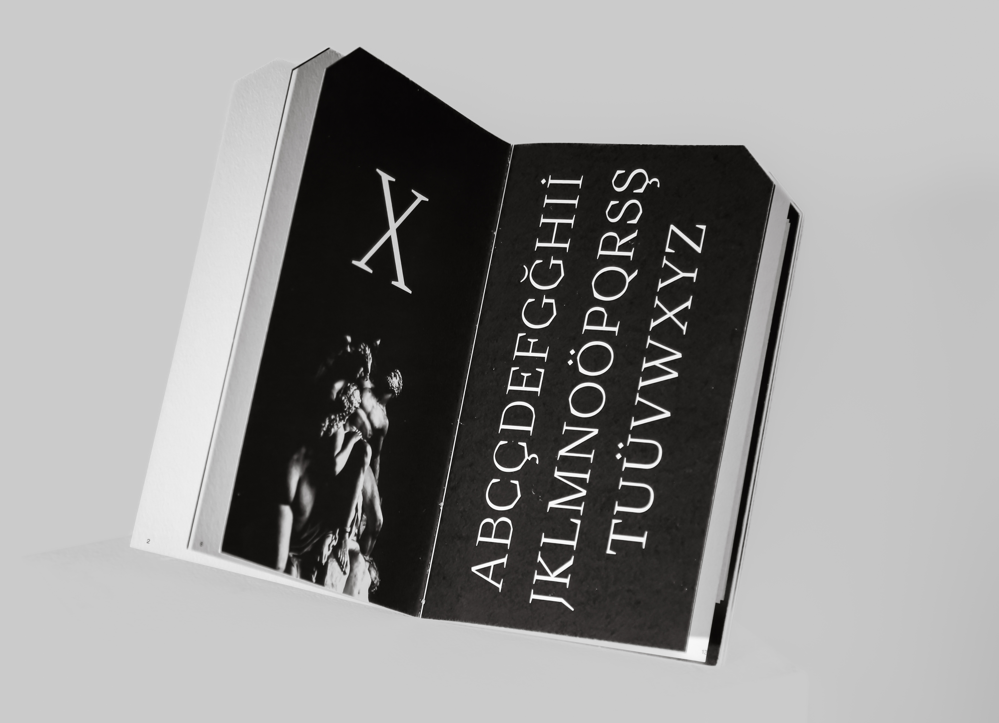

—yigit toprak
Graphic Designer
i. Projects
- Images of Body and Story
- 1984 (Obliteration)
- Emperor Display
- Wood Type
- Dialogue With The Machine
- Emperor (WEB)
- Escape Route
- Factory Reset
- All About Process
ii. Archives
iii. Info & Contact

About Emperor
Emperor is a display typeface inspired by stone carving and stone carved letters. It has sharp serifs and a straight/curved contrast in its stroke logic which makes it distinguishable from the other typefaces. It stands out from the other typefaces thanks to its acute serifs and a straight/curved contrast in its stroke logic which comes from its old style characteristics. Its construction is angular and sophisticated. Due to its readability in smaller sizes, it can also be used for captions, brief paragraphs, and smaller display headings.

It feels light but structured due to the lack of contrast in the stroke weight and vertical stress. The juxtaposition of the rounded angles with the lengthy serifs balances the overall sharpness of the letterforms. Its letter forms, including the “C” and “G,” have distinct aesthetic cuts that help it stand out and keep its stylistic characteristics.


Sharp logic and a low stroke contrast are characteristics of the lowercase characters as well. The curved and straight cut logic is particularly vivid in lowercase characters.Tall ascenders that rise slighlty above capheight are present. It goes lower than the overshoot line to avoid looking higher near the letters like “o” because of its sharp corners in some characters, like “d.”


The numerals are old—style, that is why they have different heights. Numerals like “1” and “2” are on the x-height while numerals like “3” and “5” run to the descender line. It also features stylistic straight cuts in its structure and those cuts are vivid in nuumbers like “6” and ‘‘9’’.
The stylistic cuts also show themselves in the punctuations, like the question and the exclamation mark. The thin and sharp structure does not only show itself in basic punctuations but also in symbols like the em—dash, dagger and hash.